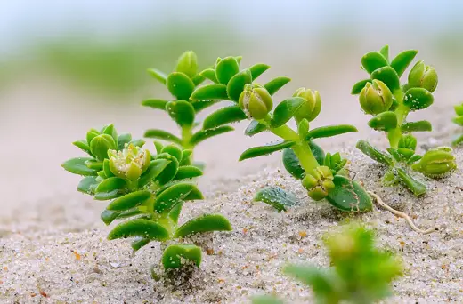

Sea sandwort
Sea sandwort is a wild green you can forage from May to August in Atlantic Canada, Quebec, British Columbia and The North. Low mats of fleshy, pointed, overlapping leaves in four rows on sandy and gravel beaches; tiny white flowers.

When is sea sandwort in season in Canada?
Sea sandwort is usually in season May to August. Timing shifts with weather, latitude and altitude.
Where does sea sandwort grow in Canada?
Sea sandwort grows in British Columbia, New Brunswick, Newfoundland and Labrador, Northwest Territories, Nova Scotia, Nunavut, Prince Edward Island, Quebec, Yukon. Regions: Atlantic Canada, Quebec, British Columbia, The North.
How do you recognise sea sandwort?
Low mats of fleshy, pointed, overlapping leaves in four rows on sandy and gravel beaches; tiny white flowers.
How do you harvest sea sandwort?
Pinch off young tips and top leaves before the plant flowers, when they are tender and mild. Leave the roots and lower leaves so it regrows. Pick away from roads, sprayed verges and dog-walking paths.
How do you eat sea sandwort?
Young shoots raw or fermented, a traditional Inuit and coastal food; also cooked like spinach.
How do you store sea sandwort?
Ferment or blanch and freeze.
What is sea sandwort good for?
Vitamin C, Vitamin A.